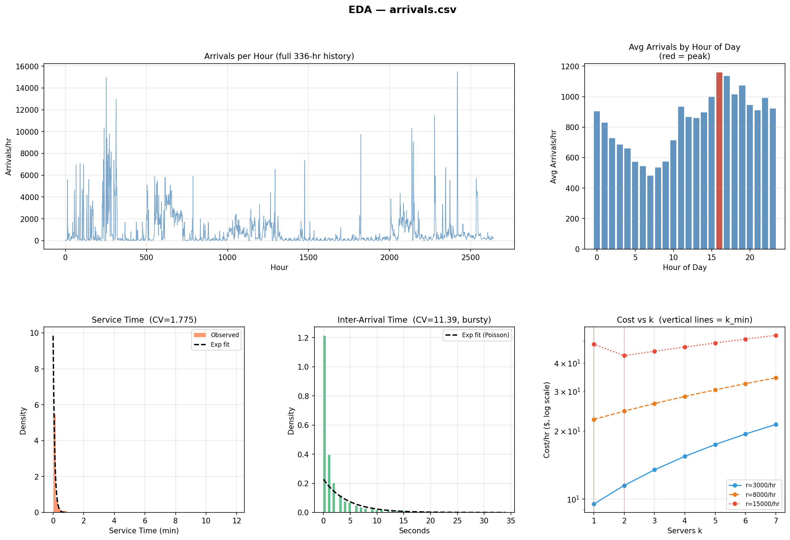

AI-Driven Server Scheduling
Cost-optimal server provisioning using queueing theory, dynamic programming, and time-of-day demand forecasting
Overview
Cloud servers need to handle changing traffic without wasting resources. Too few servers can lead to delays and service penalties, while too many increase operating costs. This project developed a server scheduling algorithm that forecasts hourly demand and determines how many servers to activate to balance cost and performance.
What Was Built
Using 2,640 hours of traffic data, the algorithm combines two forecasting methods: recent traffic and historical demand for the same hour of day.
Based on the forecast, it calculates a minimum server requirement using a safety buffer to account for unexpected traffic spikes. It then evaluates additional server configurations using a queueing model to minimize electricity, memory, and service penalty costs.
The safety buffer was tuned using 70% of the dataset, while the remaining 30% was reserved for testing.
Exploratory Data Analysis
Traffic analysis revealed clear daily patterns, with demand peaking in the afternoon and dropping overnight. However, requests often arrived in bursts, making average demand alone insufficient for server planning.
The analysis also showed that the cost of insufficient capacity was much higher than the cost of running an additional server, supporting the use of a safety buffer.

EDA: 2,640-hour traffic history (~110 days) | View EDA Plots
Arrivals per Hour
Traffic follows a clear daily cycle over ~110 days: low overnight, high midday. The typical demand for each hour of day makes a reliable forecasting baseline.
Avg Arrivals by Hour of Day
Demand peaks around hour 16 (4 PM). Peak hours also vary the most, so planning for the average alone would leave too few servers.
Service Time (CV = 0.473)
Job lengths are more consistent than the M/M/k model assumes, so the model slightly overestimates queues, which is the safe direction to be wrong.
Inter-Arrival Time (CV = 3.96)
Requests arrive in bursts rather than evenly. This burstiness is the main reason for the safety buffer (α × std).
Cost vs k
Cost falls steeply as servers are added, then rises slowly with electricity. One extra server is cheap; one too few is expensive.
Results
The algorithm was tested on 792 unseen hours using discrete event simulation with actual traffic data.
The results showed that the system could adjust server capacity throughout the day, typically using one server during lower-demand hours and two during peak periods. Most hours maintained low operating costs, while the safety buffer helped reduce exposure to expensive traffic spikes.

Backtest (discrete event simulation): hours 1848–2639 | α = 6.0 | 70/30 split | View Backtest Results
Cost per Hour
Most hours stay well below the mean. Spikes occur in high-variance hours but never approach the ~$529/hr average seen with no buffer (α = 0).
Arrivals vs Safety Rate by HOD
The safety threshold (r_safe) sits above the busiest observed traffic for almost every hour, so α = 6 gives enough coverage without being overly cautious.
Server Count k by HOD
One server (k = 1) covers nights and mornings; a second (k = 2) is added for the afternoon peak, matching the high-variance hours found in EDA.
Cost Distribution
Most hours are cheap. A small number of high-load hours drive most of the total cost (note the log-scale y-axis).
N_end by HOD
Few jobs are left waiting at the end of each hour, so the queue clears reliably and the system stays stable.
Key Design Decisions
Adaptive Demand Forecasting
Combined the previous hour's traffic (30%) with the historical average for the same hour of day (70%). Historical statistics update as new data becomes available, allowing the forecast to adapt over time.
r_est = 0.3 × r_last + 0.7 × HOD_mean
Safety Buffer
Used hourly demand variability and a peak traffic adjustment to determine minimum server capacity. A buffer factor of 6 was selected after comparing different values on the training data.
r_safe = r_mean + α × r_std, α = 6
Cost Optimization
Evaluated server counts above the minimum requirement using an M/M/k queueing model, balancing operating expenses against the risk of service penalties.
Queue Initialization
Estimated the starting queue length using a steady-state approximation rather than reconstructing it through simulation, reducing estimation error.
Impact & Next Steps
The project demonstrates how demand forecasting and optimization can support cost-efficient cloud resource allocation under unpredictable traffic.
Future work could include testing against different traffic patterns, incorporating server startup delays, and evaluating the algorithm in a live cloud environment.